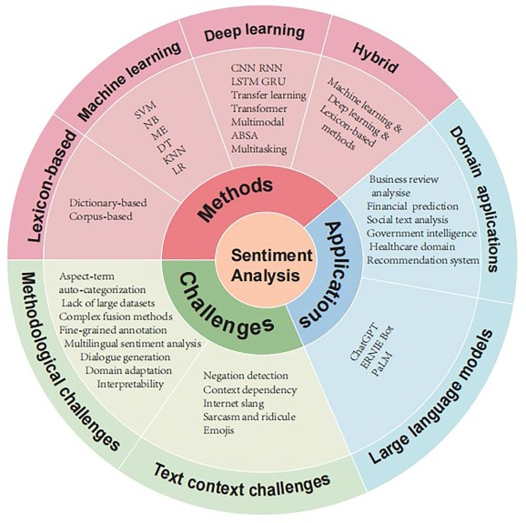

Some Considerations & Caveats
Sentiment analysis, while a powerful method to extract insights from data, is far from perfect or straightforward. After all, it seeks to interpret natural language, which is constantly evolving. Speaking of evolution, did you know that the Cambridge dictionary added 6,000 words only this year, including “broligarchy” and “delulu”, many of which are widely used by Gen Alpha? This constant expansion of language highlights just how dynamic the texts we analyze can be.
Language is also inherently rich, ambiguous, and culturally nuanced. Lexicon-based approaches, for instance, rely on predefined word lists and often struggle to capture subtleties in human expression.
In practice, sentiment analysis encounters issues like code-switching, where people mix languages in a single post, or compound sentences with mixed sentiments, such as “The movie had great acting, but the ending was lame,” which are difficult to score accurately. Context dependence further complicates interpretation: words can flip polarity depending on the domain, like “cheap,” which is positive when describing flights or monetary advantage in general, but negative when describing fabric or referring to quality.
Temporal dynamics also play a role, as slang and cultural references evolve rapidly, e.g., “bad” meaning “good” in some communities. Ambiguity adds another layer of difficulty: polysemous words like “sick” can mean either “ill” or “awesome”.
Another complication is to deal with sarcasm and irony which can completely invert the intended sentiment as in: “Oh great, another awesome Monday morning traffic jam!”.
Implicit sentiment may be present even when emotional words are absent, as in “The waiter ignored us for 30 minutes before taking our order.” These factors collectively make sentiment analysis a useful but inherently imperfect tool for understanding human language and emotion.
FIXME: In fact, if we inspect scores and emotions attributed to some user posts, we might disagree with some of the results for these very limitations. add examples!
However, it is important to emphasize that as described before, we have only explored sentiment analysis through a lexicon-based approach, and that, as illustrated in Figure ? below, there are other methods, including machine learning, deep learning and their combination (hybrid), that can be employed to extract emotions from text, including user generated content, all with their own limitations and challenges.

For example, Amazon relies on deep learning algorithms to determine the sentiment of customer reviews by identifying positive, negative, or neutral tones in the text. The models are trained on a vast dataset of Amazon’s product descriptions and reviews and are regularly updated with new information. This robust approach enables Amazon to efficiently analyze and interpret customer feedback on a large scale.
While there are more advanced approaches to sentiment analysis, including AI-assisted methods, these are discussion topics for future workshops!
References
Mao, Y., Liu, Q., & Zhang, Y. (2024). Sentiment analysis methods, applications, and challenges: A systematic literature review. Journal of King Saud University - Computer and Information Sciences, 36(4), 102048. https://doi.org/10.1016/j.jksuci.2024.102048